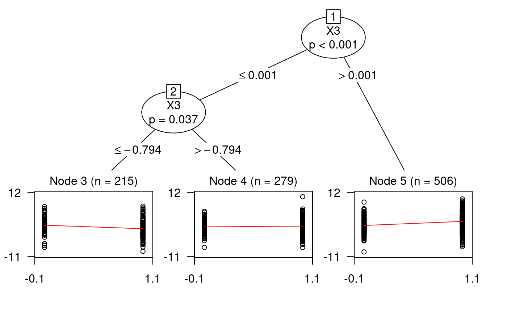

User_guidance.RmdR package “benchtm” is a package used to generate data for the subgroup identification comparison. To start with, we can directly load the library using:
Consider a two-arm study where trt = 0 represents control arm and trt = 1 represents treatment arm, the clinical outcome/response \(Y\) is generated from
\[\begin{equation} \mathbb{E} (Y|X) = g(f(X)) = g(f_{prog}(X) + trt*(\beta_0 + \beta_1 f_{pred}(X))), \end{equation}\]where \(g(\cdot)\) is the link function and \(f_{prog}(X)\) is the function for prognostic variable and \(f_{pred}(X)\) is a function for predictive variable; \(\beta_0\) and \(\beta_1\) are the coefficients of main treatment effect and the predictive effects respectively. From the data generation formula one can see that, the larger the \(\beta_0\), the more power there is to detect the overall treatment effect; the larger the \(\beta_1\), the more likely it is to detect the subgroup (the larger the treatment effect variability).
To generate the binary treatment variable, we consider \[P(trt = 1|X) = \frac{1}{1+exp(-h(X))}\] where \(h(X)\) is a user specified form. When \(h(X) = 0\), \(P(trt = 1|X) = 0.5\) represents a setting for complete randomized design.
Depending on different types of responses, the link function \(g(\cdot)\) and how the clinical endpoints are generated are given as:
In this section we provide an example of using “benchtm” package to generate a dataset for subgroup identification problem.
To generate covariates, one can either use a user dataset or generate from function “generate_X_dist”(generate from a pre-specified distribution) or “generate_X_syn”(generate data from synthetic data from a real trial). See each corresponding function for more details.
set.seed(1111)
X <- generate_X_dist(n=1000, p=10, rho=0.5)
#observational data set
trt <- generate_trt(n=nrow(X), type = "random", X=X, prop= "X2")
dat <- generate_y(X, trt, prog = "0.5*((X1=='Y')+X3)",
pred = "X3>0", b0 = 0, b1 = 1,
type = "continuous", sigma_error = 3)
head(dat)
#> trt X1 X2 X3 X4 X5 X6 X7 X8
#> 1 1 N 0.03125259 0.09421509 0.51514432 N M2 -0.98045591 0.1306782
#> 2 1 N 0.83737617 -1.09363394 -0.55371671 N M3 1.99750426 0.2235778
#> 3 1 Y 1.18467412 2.28562630 0.13729403 Y M1 1.59946889 -1.0619646
#> 4 1 N 1.87707398 0.93545962 -0.52007261 N M2 0.12848242 0.8768221
#> 5 1 Y 0.59686419 0.16525676 0.20060728 N M2 -0.08869092 0.9582106
#> 6 1 Y 2.00749871 -0.08007514 0.08383461 Y M3 -0.75252169 1.6078133
#> X9 X10 Y
#> 1 -2.71313108 0.6942494 0.2680964
#> 2 0.87700756 1.0092612 -2.8244937
#> 3 -0.07447738 -0.1410665 8.1211133
#> 4 -0.11605592 0.4896499 1.5024361
#> 5 -0.97397058 0.1617459 8.8825801
#> 6 -0.30708657 0.1690040 -4.7738621The treatment is generated based on the value of \(X_2\) where \(P(trt = 1|X) = \frac{1}{1+e^{-x_2}}\). We could fit a conditional tree using this generated data.
cov.names <- dat %>% select(starts_with("X")) %>% colnames()
eqn <- paste0("Y ~ trt| ",
paste0(cov.names, collapse = "+"))
glmtr <- partykit::glmtree(as.formula(eqn), data = dat, family = "gaussian",
parm = 2, minsize = 0.2*nrow(dat))
plot(glmtr)
Based on the results, one can see that \(X_3\) is selected as the predictive variable which contributes to the difference of the treatment effect. The subgroup with \(X_3>0.001\) has the largest treatment effect.